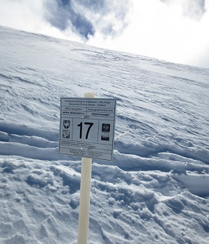
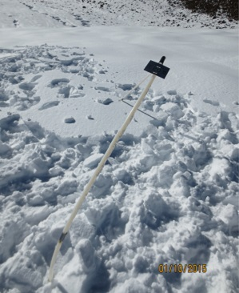

Wichtigsten Infos zu den Gletschern Tirols..zb.Anzahl der Gletscher, größten Gletscher Tirols... Bezug auf Karte und Vergleichskarte ... (leider noch nicht viele Infos gefunden, Notfalls Daten aus Atributtabelle schreiben)
Seit dem letzten Höchststand gegen Ende der sogenannten Kleinen Eiszeit um 1850 haben die österreichischen Gletscher mehr als 50 % ihrer Fläche verloren. Für den letzten Höchststand der Alpengletscher um 1850 gibt es verlässliche Abschätzungen der Gletscherausdehnung aufgrund der noch heute deutlich sichtbaren Moränen im Gletschervorfeld und regelmäßiger Messungen der Gletscherfluktuationen beginnen im späten 19. Jahrhundert. Das erste österreichische Gletscherinventar (GI 1) wurde 1969 erstellt. Im Zeitraum von 1996 – 2002 wurde das zweite Gletscherinventar (GI 2) erzeugt und auf das Jahr 1998 homogenisiert. Für das bisher letzte Inventar (GI 3) wurde auf Laserscandaten und Orthofotos die zwischen 2004 – 2012 aufgenommen wurden zurückgegriffen.
Eine dieser regelmäßigen Messungen um die Gletscherveränderung festzustellen ist die sogenannte Längenänderung. Diese wurde in den Alpen bereits Mitte des 19. Jahrhunderts an vereinzelten Gletschern durchgeführt. Zu Beginn des 20. Jahrhunderts geschah dies bereits an über 100 Gletschern. Heute wird die Länge an etwa 1.800 Gletscher weltweit beobachtet. In Österreich werden diese Messungen von zu einem großen Teil von Freiwilligen durchgeführt und vom Österreichischen Alpenverein (ÖAV) koordiniert. Mit diesers Art von Messmethode kann relativ einfach eine Veränderung des Gletschers festgestellt werden. Nach der traditionellen Methode werden dazu im Gletschervorfeld über die gesamte Breite des Gletschers einige Punkte markiert, von denen aus jährlich der Abstand zum Eisrand gemessen wird. Die Differenz zur Messung im Vorjahr ist die Längenänderung: entweder stieß der Gletscher vor oder er zog sich zurück.
Die direkte Messung der Massenänderung kann nicht an so vielen Gletschern durchgeführt werden wie beispielsweise die Messung der jährlichen Längenänderung. Die Akkumulation an einem Punkt am Gletscher wird ermittelt, indem man Schneetiefe und die Schneedichte misst. Die Schneetiefe bestimmt man mit einer Sonde oder mit dem Georadar, die mittlere Schneedichte durch Wägen von Schnee eines definierten Volumens – entweder in einem Schneeschacht oder durch Ziehen eines Schneekernes mit einem Kernbohrer Miteinander multipliziert ergeben Schneetiefe und -dichte die Akkumulation in Kilogramm pro Quadratmeter. Um die Abschmelzung zu bestimmen, werden so genannte Ablationspegel mehrere Meter in das Eis gebohrt, die nach kurzer Zeit festfrieren. Nach einem Jahr misst man, wie weit die Stangen ausgeschmolzen sind, und berechnet die Höhen- bzw. die Massenänderung der Eisoberfläche. Um nun die Massenbilanz eines gesamten Gebirgsgletschers zu bestimmen, werden die oberflächliche Akkumulation und Ablation an vielen Punkten gemessen und diese Punktwerte auf die gesamte Gletscherfläche interpoliert. Damit erhält man die flächenhafte Verteilung der Massenbilanz.
 Größter Längenverlust seit Jahrzehnten Der Gletscherbericht zur letzten Messperiode zeigt einen signifikanten Längenverlust bei fast allen beobachteten Gletschern auf. Einzig das Simonykees in der Venedigergruppe in Osttirol zog sich im Vergleich zum Vorjahr nicht zurück und blieb stationär Der durchschnittliche Rückgang von 25,2 Metern liegt deutlich über den Messdaten des Vorjahres (-14,2 Meter) und weit über dem Mittel der letzten zehn Jahre (-16,5 Meter). "Seit den 1990er Jahren sind die Bedingungen für unsere Gletscher sehr ungünstig – das aktuelle Gletscherhaushaltsjahr fügt sich hier nahtlos ein", erklären Gerhard Karl Lieb und Andreas Kellerer-Pirklbauer.
Weiter infos und ältere Gletscherberichte unter: